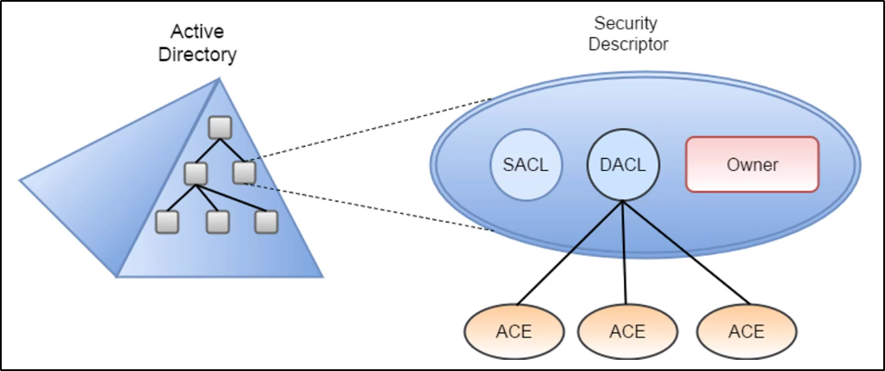

ACL (Access Control Model)
Permette di abiltiare controlli sull'abilità di un processo di poter accedere
ad Oggetti o altre risorse in Active Directory, basandosi su vari elementi:
- Access Tokens (security context di un processo -oppure - identità e privilegi di un utente)
- Security Descriptors (SID dell'owner dell'oggetto, Discretionary ACL (DACL) e System ACL (SACL))
Quando un processo o persona deve accedere ad una risorsa,
deve presentare il suo Access Token.
Dall'altro lato, l'oggetto il quale viene accesso,
possiede i Security Descriptors.
La DACL è la lista di chi ha i permessi per accedere a questo oggetto,
La SACL controlla la policy applicata sull'oggetto (e.g. logga permessi mancati da chi prova ad accedere)
Le ACE stanno per Access Control Entry, corrispondono a permessi o audit access.

Se vai in un gruppo AD, vai in Proprietà, sicurezza ed Avanzate:
questo è un esempio di DACL!


Se aggiungiamo un utente o gruppo ad un altro con full permessi,
potra accedere a tutti gli oggetti al suo interno!
Ottieni tutte le ACL associate ad un oggetto specifico:
ObjectDN indica l'oggetto che cerchiamo,
IdentityReference indica chi ha i permessi (ObjectType indica tutti gli utenti del gruppo sotto)
Gli ActiveDirectoryRights indica i permessi!
AccessControlType indica se sono permessi allow o denied!
InheritedObject indica se i permessi sono stati ereditati o meno.


Ottieni tutte le ACL, associate ad un determinato prefisso per la ricerca

Possiamo enumerare le ACL usando anche ADModule, ma senza risolvere i GUIDs

Ottieni tutte le ACL associate ad una specifica path LDAP usata per la ricerca

Cerca per alcuni ACE (Access Control Entries) interessanti:
generalmente quelle con permessi di scrittura o di modifica

Ottieni le ACL associate ad una specifica path